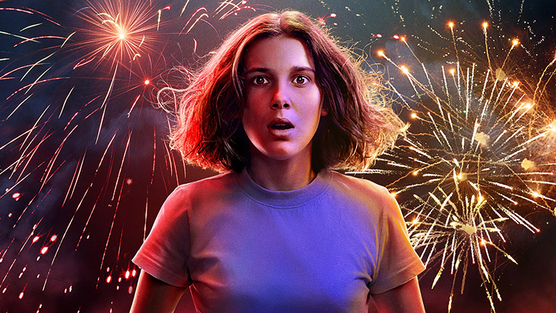
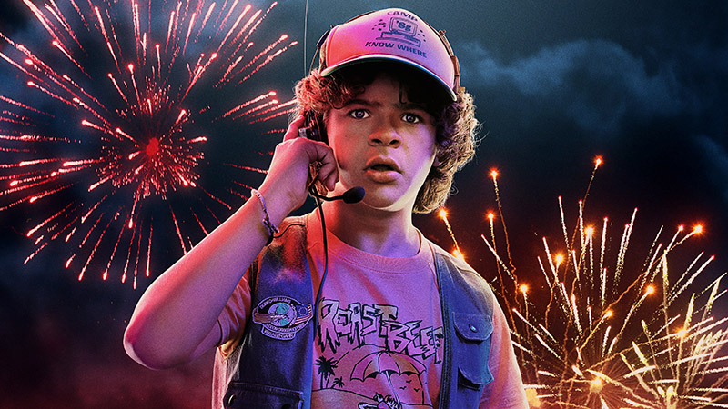

Майк
Майк склонен к мечтам. То, с каким интересом и азартом он играл в «Подземелья и драконов»,
открывает его со стороны творческого мыслителя. Он весьма эмоционален, но готов довольно быстро
принять серьёзное решение в сложных ситуациях. Дружба для него имеет огромное значение, поэтому
он готов на многие поступки ради своих друзей, на которые не отважатся пойти и взрослые
люди.

Одинадцать
Выросшая в Национальной лаборатории Хоукинса и полностью лишенная социализации, Одиннадцать была
робкой, социально замкнутой и чрезвычайно осторожной в отношении других людей. Тем не менее, она
яростно защищала людей, которым небезразлична, и проявляла непоколебимую лояльность по отношению
к тем, кто заботился о ней, была готова пожертвовать собой, чтобы уничтожить Монстра, когда он
угрожал причинить вред ее друзьям.
Уилл
Уилл — спокойный и творческий ребёнок. Уравновешенный, разумный, очень чувствительный, но не
выказывавший всеми способами это: когда в школьный шкафчик ему подложили рисунок с надписью «
Зомбёнок» мальчик не показал своей обиды. Выросший без отца, он не капризный и не
слабохарактерный, однако, в небольшой степени замкнутый в себе.

Дастин
Дастин — защитник единства. Он часто разрешает конфликты внутри группы, обращая внимание друзей
на то, что происходит вокруг них. У него нейтральный, уравновешенный подход к Одиннадцать и
сверхъестественным событиям, разворачивающиеся вокруг них. Дастин старается рассмотреть все
происходящее с научной точки зрения (несмотря на свою любовь к фантазиям) и, возможно, является
самым умным в четверке - несмотря на его неверное суждение в том, что Дарт является в каком-то
роде домашним животным.
Лукас
Лукас глубоко переживает за своих близких. Для него очень важна дружба с Майком, Дастином и
Уиллом, он смел и самоотвержен. Сначала он недоверчиво относился к Одиннадцать и её
способностям, но потом смог перейти через себя и довериться ей, назвав её своим другом.
Макс
Макс упорна и уверена в себе. Она плохо ладит со своим братом Билли. Из-за этого она не любит
говорить о своем прошлом и с подозрением относится ко всем окружающим. Макс хорошо ездит на
скейтборде, который стал ее главным средством передвижения. Она также отлично играет в
видеоигры, в которых использует псевдоним "MadMax". Из-за недоверчивости и скептицизма ей трудно
поверить в странные события, происходящие в Хоукинсе. Тем не менее, она всегда готова помочь,
когда поймет всю серьезность ситуации.
Стив
Первоначально Стив был показан типичным популярным мальчиком, который интересовался Нэнси. Он
боится рассказать о пропаже Барб, поскольку тогда его родители узнали бы о вечеринке, которую он
провел во время их отсутствия. Делая порой поспешные выводы, Стив все-таки способен принять свои
ошибки и первым пойти на примирение. Несмотря на страх, он помогает Нэнси и Джонатану в борьбе с
Монстром.